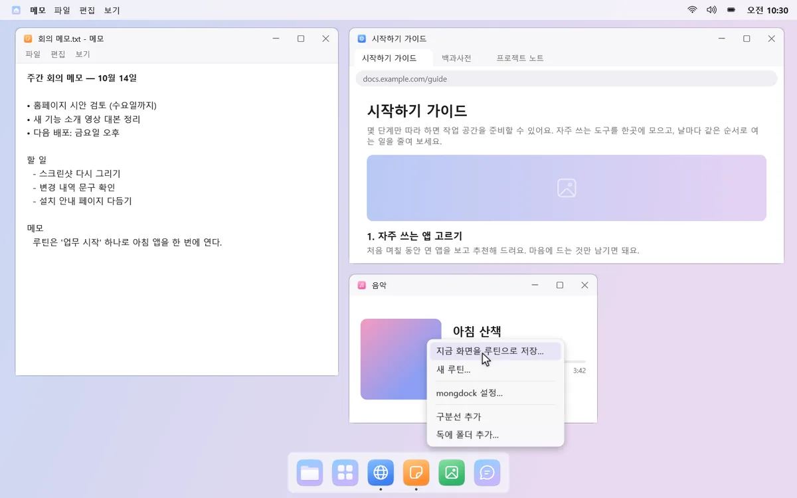
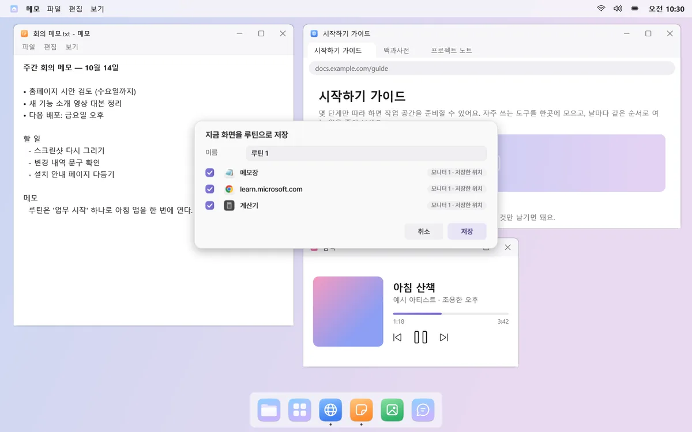
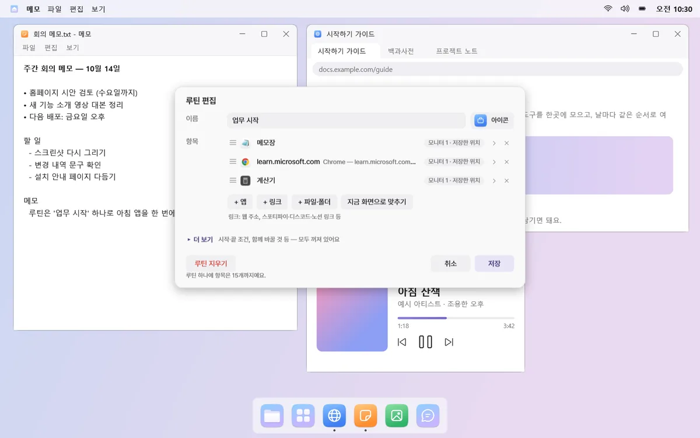
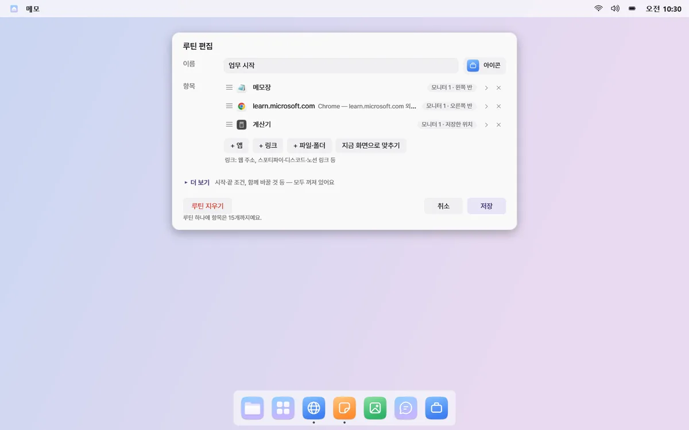
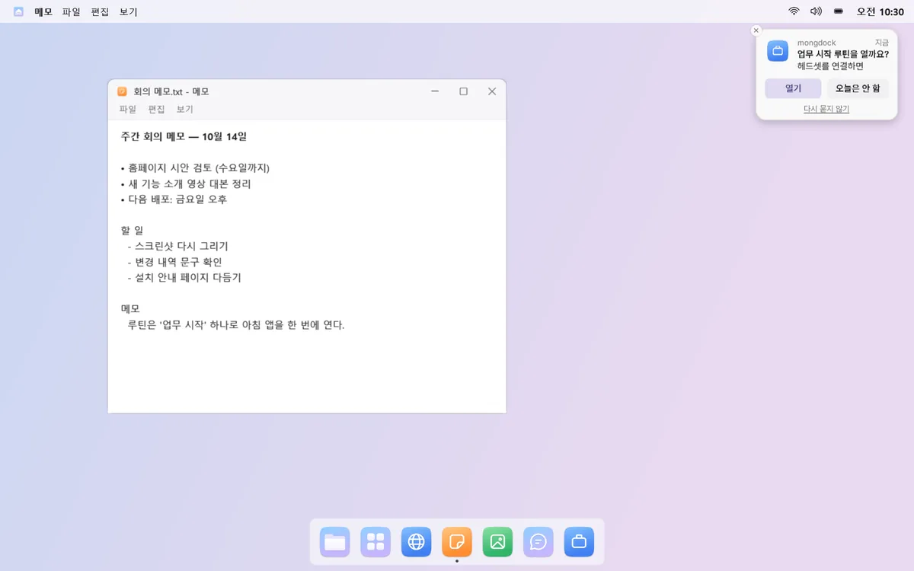

루틴
매일 여는 앱들, 이제 한 번에 열어요
같이 쓰는 앱·링크·게임을 루틴 하나로 묶어 두세요. 누르면 새 데스크톱에 정해 둔 자리로 한꺼번에 열리고, 끝내면 루틴이 연 창만 닫아요.
예: “업무 시작”을 누르면 메일·브라우저·문서가 정해 둔 모니터와 자리에 열려요.
01
누르면 자리까지 맞춰 열려요
루틴을 누르면 새 가상 데스크톱이 생기고, 앱마다 정해 둔 모니터와 위치(최대화, 왼쪽 반 등)로 열려요. 상단바에는 루틴 이름이 보이고, 원하면 그 데스크톱에 머문 시간도 함께 보여요.


02
지금 화면 그대로 저장해요
쓰던 창들을 원하는 자리에 띄워 두고 “지금 화면을 루틴으로 저장…”을 누르면 끝이에요. 자주 같이 여는 앱을 몽독이 알아보고 루틴을 먼저 추천하기도 해요.



03
앱도, 링크도, 게임도
한 루틴에 앱, 탭 여러 개를 담은 링크, 파일·폴더를 함께 넣을 수 있어요. 스팀·에픽·GOG 게임과 게임 런처도 넣으면 루틴을 열 때 바로 실행돼요.

04
때가 되면 먼저 물어봐요
헤드셋이나 모니터를 연결할 때, 컴퓨터를 켤 때, 정해 둔 요일·시각에, 특정 앱을 켤 때 “열까요?” 하고 물어요. 같은 조건으로는 하루에 한 번만 묻고, 기본은 직접 누를 때만 열려요.

05
끝낼 땐 연 것만, 바꾼 건 되돌려요
“루틴 끝내기”는 루틴이 연 창만 닫고, 그 전부터 떠 있던 창은 건드리지 않아요. 소리 출력 장치·볼륨·방해 금지·독 숨김을 루틴과 함께 바꿔 두면, 끝낼 때 열기 전 상태로 돌아가요.
시작·끝 조건과 함께 바꿀 것은 편집 창의 ‘더 보기’ 안에 있고, 모두 꺼진 채로 시작해요.
알아 두세요
- 창을 하나만 띄우는 앱(카카오톡, 디스코드 등)이 이미 켜져 있으면 새로 열지 않고, 그 앱이 있는 데스크톱을 알려 줘요.
- 루틴을 끝낼 때 저장할지 묻는 창은 닫지 않고 그대로 둬요.
- 루틴을 연 뒤 몽독을 다시 시작하면 그 루틴이 연 창을 알 수 없어서, 창은 직접 닫아야 해요.